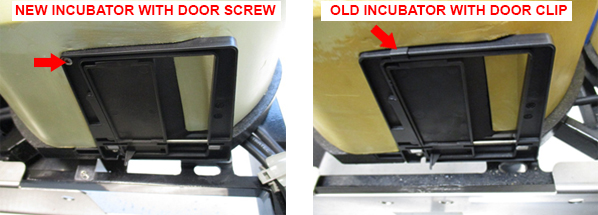
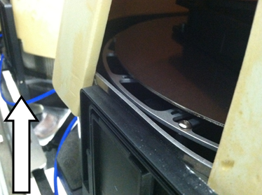
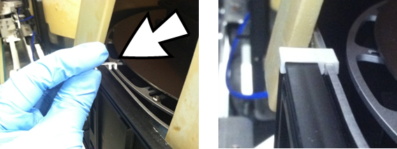
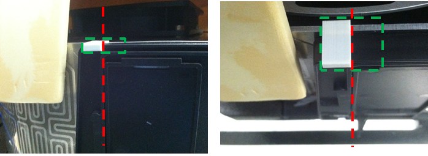
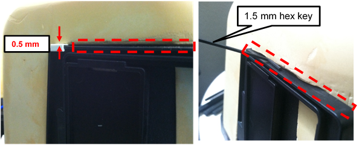
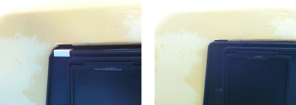
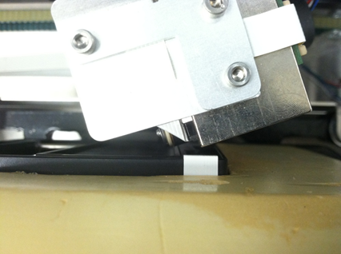
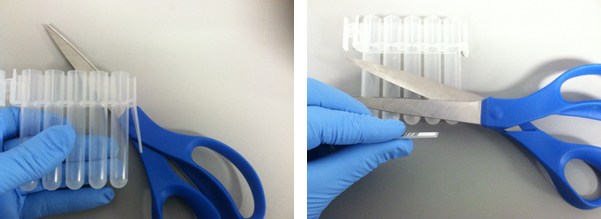

Incubator Door Clip Installation
Parts and Materials Required
- Proper PPE
- Incubator Door Clip Kit (contains 3), 1 clip per incubator
- MTU
 Multi-tube unit—Container used to process tests in the instrument. An MTU contains five separate reaction tubes. The MTU is moved through the instrument by the linear distributor and includes five tiplets for pipettiing to be used in the mag wash station. (Qty: 1)
Multi-tube unit—Container used to process tests in the instrument. An MTU contains five separate reaction tubes. The MTU is moved through the instrument by the linear distributor and includes five tiplets for pipettiing to be used in the mag wash station. (Qty: 1) - 1.5 mm hex key
- (Optional) 4 mm hex key
- Scissors (if a shim is required)
Time Required
- 45 minutes (if door clips are installed)
Procedure
In Panther Systems Serial # 00919, New incubators have been redesigned to include screws that secure the incubator doors, eliminating the need for an incubator door clip.

|
Note—These screws were cut into all Panthers above Serial # 00919 (Serial # 00916 for High Temp Incubators). Incubators with a screw do not require installation of door clips. |
- Inspect all incubators to verify which door clip is installed.
Note—Any incubator without a screw MUST have a door clip installed. 
- If door clips are installed, start the PANTHER Assay Procedures required to prepare and perform a specific test. In the context of this document, assay refers exclusively to a Hologic test, such as Aptima Combo or Ultrio. Software and allow MTUs to unload (if applicable).
- Power down the Panther System.
- Open the service drawer.
- Remove the front panel and blue indicator strips as described in Incubator Module Removal and Replacement.
Note—With sufficient experience, the removal of the front cover and the (blue) incubator straps is not necessary to apply the clip. If the front panel is removed use a permanent marker to mark the original location of the front panel to ease proper seating when reassembled. - Raise the Incubator cover to expose the door section.

- With a new Incubator Door Clip, snap it near the edge of the door.
Note—The color of the Incubator Door Clip may vary. A white Clip was used for better contrast in the picture. 
-

- Replace the incubator cover and retention straps.
- Using a 1.5 mm hex key, verify that the covers seats with < 1.5 mm gap (between the door and cover) outlined in red.
Note—The thickness of the Clip lifts the cover by approximately 0.5 mm. 
- If incubator cover gap is >1.5 mm and is due to the Clip thickness, carefully create a small notch (~0.5 mm tall) in the incubator cover above the Clip (green) using the Shim.
Use the Shim to create the notch on the soft incubator cover by: - To create the Shim, using scissors cut the barcode section of an MTU.
- This Shim measures 1.0 mm x 9.5 mm.
- Inserting the tip (~1 mm) of the Shim in between the Incubator Door Clip and the Incubator cover, press down with approximately 10 lbs of force downward (e.g., weight of 2 laptops) on the incubator cover.
- Inserting the tip (~2 mm) of the Shim in between the Incubator Door Clip and the Incubator cover, press down with approximately 10 lbs of force downward on the incubator cover.
- Repeat Step c by 1 mm increments until 10 mm of the Shim is inserted between the Incubator Door Clip and the Incubator cover.
- Using a 1.5 mm hex key, inspect the fit of the Clip under the notched Incubator Door cover is less than 1.5 mm. Repeat Step 11 increasing the height of the notch in 1 mm increments as needed to achieve the properly seating of the Clip and cover.

-
By hand, carefully move the Distributor in front of the incubator door.

- Rotate the Distributor to confirm that there is no interference between the Incubator Door Clip and the Distributor.
Note—If necessary, adjust the Incubator feet to increase the distance between Distributor and Incubator. Also, verify that the Incubator Door open/closes smoothly. - Repeat this procedure as needed for the other incubators.
- Proceed to Verification.

Verification
- Reassemble the Incubators and Drawer Front Panel but leave the Service Drawer open.
- Perform Incubator Slot Alignment
- This step verifies the spacing between the MTU and the Incubator Door frame.
- Perform Distributor Alignment and Teaching Procedure to synchronize the Distributor to the Incubator Slot 1 position from the previous step.
- In Service Software, Initialize all incubators to home to Slot 1 with Incubator Slot Alignment.
- Close the Service Drawer.
- Cycling 3 MTUs, perform a Distributor OQ across all Incubators with new Door Clip, Chiller Ramp, MagWash 1 and 2, and AMP load station The load station that is the interface between the reagent pipettor and the MTU. The load station and the sample mixing station contain orbital mixers to achieve mixing of liquids after dispense..
- This step verifies proper MTU pick/placement in all areas that may be affected by the new Door Clip.
- Verification is complete.
 button at the top of the page to send feedback, comments, or change requests.
button at the top of the page to send feedback, comments, or change requests.